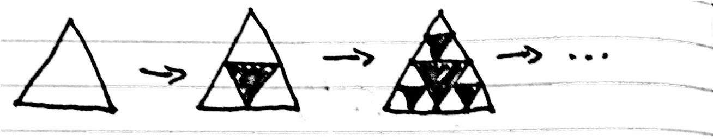
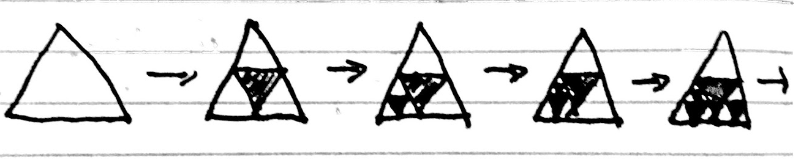
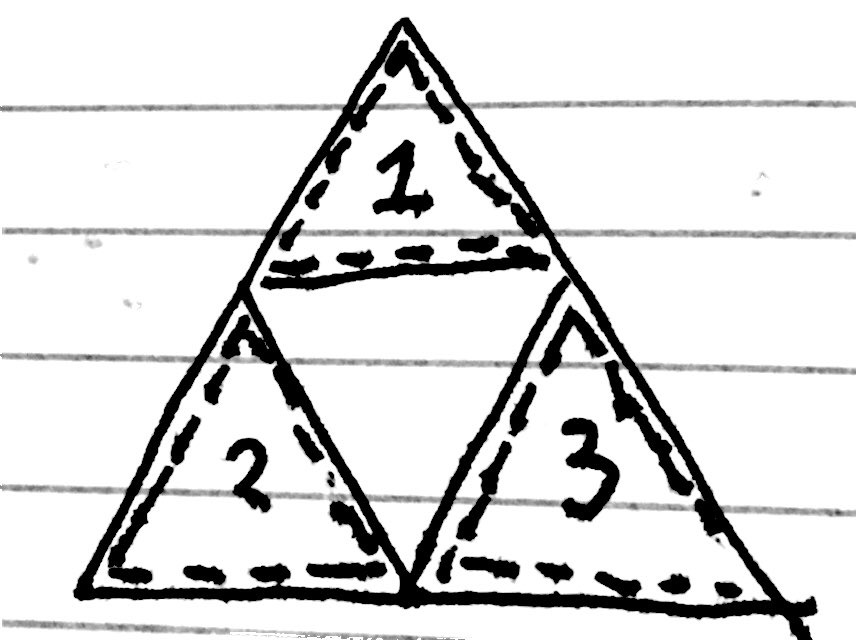
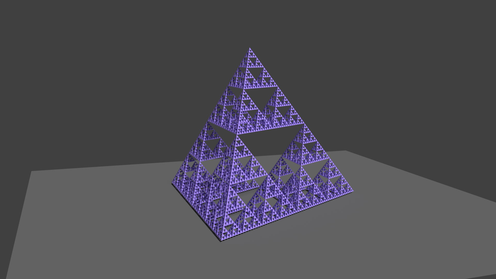

Funny Sierpinski Problem
Random number: 11
14th December 2016
A few days ago, I came up with a funny problem (funny in the sense that it made me chuckle for some reason as I was walking home). Because of finals (cry) I chose not to think about it, but I thought about it a little bit today and looks like it wasn't a really good problem after all.
To construct an ordinary Sierpinski's triangle, you can start with an equilateral triangle, and repeat the following process over and over again:
- Look at every triangle, and dig out the 'center triangle' of that triangle, like this:

What if we were to... randomise this process? Suppose that we had a new construction process, where we start with a full triangle, but we repeat the following modified process instead?
- Uniformly pick a random white triangle, and dig out the 'center triangle' of that particular triangle, like this:

The question: Does this modified process always 'limit' towards a regular Sierpinski's triangle? We can 'formalise' this notion by saying that a particular random process 'limits' towards a regular Sierpinski's triangle if the Area of the remaining object limits to 0. (Also, excuse the bad drawings - I don't have the patience to make them look any better)
After the first 'digging out', we are left with a triangle split into three sections:

and subsequently, all the 'digging out's occur in one of the three marked regions. It seemed to me at first that there might be some positive probability that the resulting shape does not limit towards a regular Sierpinski. Suppose that a slight imbalance is created, and more 'digging out's occurred in region 1 than in region 2 and 3. This effect would snowball; as since more triangles have been dug out of region 1, then more triangles exist in region 1, and hence there is a higher probability that further triangles will be dug out of region 1.
It seems, however, that any process always limits to the regular Sierpinski's Triangle. First, assume that a finite number of 'digging out' occurs in region 1. Then, for some \(n\) and \(N\), after \(N\) 'diggings out', we will have \(n\) triangles in the top region. After this, all 'diggings out' will occur in region 2 and 3. So the probability that no more diggings out occur in region 1 is:
$$P(n,N) = \frac{N-n}{N} \cdot \frac{N-n+2}{N+2} \cdot \frac{N-n+4}{N+4} \cdot\cdot\cdot\cdot $$
which converges to \(0\) (because terms cancel out, similar to the sequence \(\prod (\frac{m-1}{m})\)). Hence each region must be infinitely dug out.
Now suppose that \(E_\infty\) is the limit of \(E_m\), where \(E_m\) is the expected area of the triangle after doing \(m\) random dig-outs. Exploiting the self-similarity of the Sierpinski's Triangle, we have that:
$$E_\infty = \frac{3}{4} E_\infty$$
as the large triangle is made up of three smaller ones, each scaled down by a factor of 4. Hence \(E_\infty\) is 0, and hence, because there can never be negative area, there is no probability that the modified process limits to an object with positive area.
So that probably made no sense. But here, look! A nicer Sierpinski's Pyramid, this time I didn't use any code whatsoever!

(I think the orthographic/perspective views or something is making it look wonky)